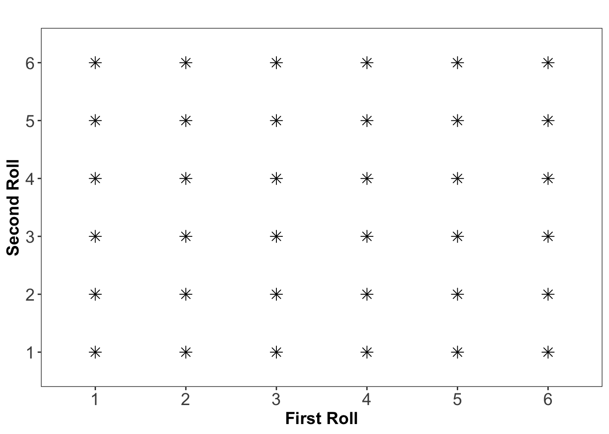

9 What is Probability?
Now that we have explored fundamental probability concepts, such as unions, intersections, complements, and mutually exclusive events, we can use these ideas to formally define probability itself.
Using the relationships between events that we have discussed, we can also establish the formal rules of probability and see how these concepts help in calculating probabilities for different types of events.
9.1 Fundamental Assumptions of Probability
Probability theory provides a framework for modeling randomness and quantifying uncertainty. At its core, it relies on three fundamental assumptions that define how probabilities are assigned to different outcomes in a random experiment.
First, every probability calculation begins with a random experiment that has a well-defined sample space, denoted as \(\Omega = \{O_1, O_2, \dots, O_n\}\). This sample space represents all possible outcomes of the experiment, ensuring that every event of interest is accounted for.
Second, once the sample space is established, each outcome \(O_i\) is assigned a probability \(P(O_i)\) for \(i = 1,2,\ldots, n\), representing the likelihood of that specific event occurring. These probabilities must follow
-
non-negativity, meaning that probabilities must always fall within the range \(0 \leq P(O_i) \leq 1\) for all outcomes. This ensures that an event can never have a negative probability, and the probability of a certain event is at most 1.
- and the total probability principle, stating that the sum of all assigned probabilities must equal 1:
\[P(O_1) + P(O_2) + \dots + P(O_n) = \sum_{i=1}^{n} P(O_i) = 1\]
These fundamental principles form the backbone of probability theory, ensuring a structured and consistent way to reason about uncertain events. By defining probabilities within these constraints, we can build models that capture real-world randomness and variability in a mathematically rigorous way.
The probability of an event \(A\), denoted as \(P(A)\), is determined by summing the probabilities of all individual outcomes that make up \(A\): \[ P(A) = \sum_{O_i \in A} P(O_i) \]
This rule ensures that if an event consists of multiple possible outcomes, its probability is found by adding up the probabilities of each contributing outcome.
Since probability values must be assigned consistently, we require a formal system that ensures logical coherence in probability calculations. This leads us to Kolmogorov axioms, which form the foundation of modern probability theory.
9.2 Kolmogorov’s Axioms
To maintain consistency in probability assignments, Andrey Kolmogorov formulated three fundamental axioms:
Non-Negativity: The probability of any event \(A\) is always greater than or equal to zero:
\[P(A) \geq 0\]
This ensures that probabilities are never negative.Total Probability: The probability of the entire sample space \(\Omega\) (i.e., the event that some outcome must occur) is exactly 1:
\[P(\Omega) = 1\]
This guarantees that probability is correctly distributed among all possible outcomes.Additivity for Mutually Exclusive Events: If two events \(A\) and \(B\) cannot occur at the same time (i.e., they are mutually exclusive), then the probability of either occurring is the sum of their individual probabilities:
\[P(A \cup B) = P(A) + P(B)\]
This principle extends to any finite or countable number of mutually exclusive events. If \(A_1, A_2, \dots, A_k\) are pairwise disjoint events, then the probability of their union is the sum of their individual probabilities: \[P(A_1 \cup A_2 \cup \dots \cup A_k) = P(A_1) + P(A_2) + \dots + P(A_k)\]
These axioms are not just abstract rules; they provide the backbone for all probability calculations, from simple games of chance to risk assessments in finance, medicine, and machine learning. By defining probability through outcome summation and enforcing consistency through these axioms, we build a powerful and reliable framework for understanding and modeling uncertainty, thus allowing for meaningful calculations and predictions about uncertain events.
9.3 Defining Probability
The probability of an event \(A\), denoted as \(P(A)\), is a measure of how likely it is that the event will occur. Different interpretations of probability exist, leading to various probability definitions.
9.3.1 The Classical Definition
The classical definition of probability, derived from basic counting principles, states that if a random experiment has \(N\) possible outcomes, and exactly \(N_A\) of these correspond to event \(A\) occurring, then the probability of \(A\) is given by: \[P(A) = \frac{N_A}{N}\] This is known as a theoretical probability assignment, as it assumes that all outcomes are equally likely.
9.3.2 The Frequentist Definition
An alternative way to define probability is through relative frequency. In the frequentist interpretation, the probability of an event \(A\) is understood as the proportion of times \(A\) occurs in a very long sequence of repeated random experiments. This can be expressed mathematically as: \[P(A) \approx \frac{n_A}{n}\] where:
- \(n_A\) is the number of times event \(A\) occurs.
- \(n\) is the total number of trials.
As the number of trials \(n\) increases, the relative frequency of event \(A\) stabilizes and approaches its probability \(P(A)\), aligning with the classical probability definition. In other words, if we repeat an experiment an extremely large number of times, the empirical probability we observe will converge toward a fixed value. This phenomenon is known as the stability of relative frequencies and serves as the empirical foundation of probability theory. It explains why probabilities can be estimated by repeated experimentation, as observed frequencies tend to settle around a fixed value over a large number of trials. AN example of this is shown below in Example 9.1.
This probability defintion is known as the empirical probability assignment, meaning that probabilities are assigned based on observed data rather than theoretical assumptions.
9.3.3 The Subjective Definition
Another way to interpret probability is through subjective probability, where probability is understood as a*measure of personal belief in the occurrence of an event. Formally, the probability of an event \(A\) in this interpretation is given by:
\[P(A) = \text{a measure of how strongly a person believes that } A \text{ will occur}\] For example, one might estimate the probability of rain tomorrow as 30%, or believe that the chance of Germany winning the next Eurovision Song Contest is 70%. These probabilities are not derived from mathematical models or repeated experiments but instead reflect an individual’s degree of confidence in a given outcome.
This approach known as the subjective probability assignment is commonly used in decision-making under uncertainty, such as betting, economics, and risk assessment, where probabilities are assigned based on available information, intuition, or expert judgment rather than empirical frequency or formal statistical models.
Example 9.1: Stability of Relative Frequencies
How many sixes can we expect if we roll a die 10 times? 1000 times? 10,000 times?
Let event \(A\) represent rolling a six when tossing a fair die. The theoretical probability of rolling a six is:
\[P(A) = \frac{1}{6} \approx 0.167\]
This suggests that in 10 rolls, we should expect approximately 1 to 2 sixes.
To illustrate this, nine people each rolled a die 10 times, producing the following results for the number of sixes obtained: \(1, 3, 1, 2, 2, 5, 4, 0, 2\)
In total, there were 90 rolls, with a total of: \(1+3+1+2+2+5+4+0+2 = 20\) occurrences of a six. The relative frequency of rolling a six in this experiment was: \[\frac{n_A}{n} = \frac{20}{90} = 0.22\]
What happens if we roll the die many more times? Using a computer simulation, the die was rolled 1000, 10 000 and 100 000 times, resulting in 140, 1726, and 16 745 sixes. The results are summarized in Table 9.1.
| Number of 🎲 Rolls | Number of Sixes | Relative Frequency |
|---|---|---|
| 10 | 2 | 0.20 (20%) |
| 90 | 20 | 0.22 (22%) |
| 1,000 | 140 | 0.14 (14%) |
| 10,000 | 1,726 | 0.173 (17.3%) |
| 100,000 | 16,745 | 0.167 (16.75%) |
As the number of trials increases, the observed relative frequency tends to stabilize around the theoretical probability. This illustrates the law of large numbers, which states that the empirical probability of an event converges to its theoretical probability as the number of trials increases. We’ll return to this later on.
9.4 Uniform Probabilitis
In many practical situations, it is reasonable to assume that all outcomes of a random experiment are equally likely. This is known as a uniform probability model.
For an experiment where each outcome occurs with equal probability, the probability of an event \(A\) can be calculated as:
\[P(A) = \frac{N_A}{N}\]
where:
- \(N\) is the total number of possible outcomes.
- \(N_A\) is the number of favorable outcomes (i.e., outcomes where event \(A\) occurs).
This applies to all situations where each outcome has the same probability of occurring.
Example 9.2: Rolling Two Dice 🎲🎲
Consider rolling two fair six-sided dice. Since each die has six faces, there are a total of:
\[6 \times 6 = 36\]
possible outcomes, all of which are assumed to be equally likely. This is illustrated below where each star represents a possible combination of each roll of the two dice:
What is the probability of rolling two sixes?
Solution
Define event \(A\) as the event of rolling a six on both dice. Since there is only one way to get this outcome \((6,6)\) among the 36 possible outcomes, the probability of \(A\) is: \[P(A) = \frac{1}{36} \]
Thus, the likelihood of rolling double sixes in a single roll is 1 in 36, or approximately 2.78%.
Below in Table 9.2, all possible outcome combinations and their corresponding probaiblitis are given. The probability of rolling double sixes in a single roll is given the last row of this table.
| Sum | Number of Outcomes | Probability |
|---|---|---|
| 2 | 1 | 1/36 (2.78%) |
| 3 | 2 | 2/36 (5.56%) |
| 4 | 3 | 3/36 (8.33%) |
| 5 | 4 | 4/36 (11.11%) |
| 6 | 5 | 5/36 (13.89%) |
| 7 | 6 | 6/36 (16.67%) |
| 8 | 5 | 5/36 (13.89%) |
| 9 | 4 | 4/36 (11.11%) |
| 10 | 3 | 3/36 (8.33%) |
| 11 | 2 | 2/36 (5.56%) |
| 12 | 1 | 1/36 (2.78%) |
9.5 Counting Outcomes: Combinatorial Methods
In many probability problems, it is not always as straightforward to determine how many possible outcomes exist or how many outcomes belong to a particular event. Fortunately, there are efficient counting methods that work in a wide range of situations. These methods are based on combinatorics, which provides systematic ways to count possible outcomes (see Chapter 2).
When dealing with such compound random experiments, where multiple steps or selections are involved, we often use the urn model (introduced in Chapter 3) to represent the problem mathematically. This allows us to determine the number of ways an event can occur systematically.
One key distinction in counting problems is whether selection is with or without replacement.
If a ball is drawn from an urn and returned before the next draw, then every selection remains independent, and the number of available choices does not change. This is known as drawing with replacement. For example, if an urn contains six balls, each ball has a \(1/6\) probability of being chosen, and this probability remains the same for every draw.
In contrast, drawing without replacement means that once a ball is selected, it is not returned to the urn. This affects the probability of subsequent draws. A common example is a lottery draw, where seven winning numbers are selected from a total of 35 balls. Since each number can only appear once, this is an example of drawing without replacement.
Another important factor is whether the order of selection matters when counting possibilities.
In some cases, order does matter. For example, imagine that a company requires employees to create five-letter security codes using the letters A, B, C, D, and E. Here the order of the letters celarly matters since password ABCDE is different from password ACBDE. This means the number of possible passwords availbale to choose from is determined by permutations, where order plays a role.
In other cases, order does not matter. Returning to the lottery example, suppose the machine selects the balls in the order 1,2,3,4,5,6,7. This sequence represents the same lottery result as if the balls had been drawn in the order 7,6,5,4,3,2,1. Since the order of selection does not change the outcome, this scenario follows combinations, where only the chosen numbers matter, not their sequence.
By understanding whether we are dealing with replacement or no replacement and ordered or unordered selection, we can use combinatorial techniques to systematically count possible outcomes in probability problems.
9.5.1 Drawing with Replacemen, Order Matters
Example 9.3: PIN Code Generation
Consider a four-digit PIN code, where each digit can be any number from 0 to 9. Since each digit is chosen independently and can be repeated, every unique sequence forms a distinct PIN code.
This is an example of permutations with repetition, where the total number of possible PIN codes is given by: \[N^n\] where:
- \(N\) is the number of available choices for each digit (10 digits: 0–9).
- \(n\) is the number of digits in the PIN code (4-digit code). Applying the formula: \[10^4 = 10,000 \]
This means there are 10,000 unique PIN codes that can be generated under these conditions.
Example 9.4: Vehicle Registration Numbers in Sweden
How many possible vehicle registration numbers exist in Sweden? In Swedish license plates, a registration number consists of three letters followed by three digits. Since letters and digits can be repeated, this follows the rule of permutations with repetition.
To calculate the total number of possible license plates, we consider:
- The first three characters are letters, chosen from 26 available options.
- The last three characters are digits, chosen from 10 available options (0–9).
Using the multiplication principle, the total number of possible registration numbers is:
\[ 26 \times 26 \times 26 \times 10 \times 10 \times 10 = 26^3 \times 10^3 = 17,576,000 \]
This means that Sweden can issue up to 17.58 million unique vehicle registration numbers under this system. The formaula is generally written as \(N_1^{n_1} \times N_2^{n_2}\) where:
-
\(N_1 = 26\) (number of available letters), \(n_1 = 3\) (three letters chosen).
- \(N_2 = 10\) (number of available digits), \(n_2 = 3\) (three digits chosen).
9.5.2 Drawing with Replacemen, Ignoring Order
Example 9.5: Selecting Ice Cream Flavors 🍦
Imagine an ice cream shop that offers six different flavors. A customer selects three scoops of ice cream, where:
- The same flavor can be chosen multiple times (replacement).
- The order of the scoops does not matter— choosing (vanilla, chocolate, vanilla) is the same as (chocolate, vanilla, vanilla).
Since order is ignored, but repetition is allowed, we calculate the number of possible selections using combinations with replacement, given by the formula: \[\binom{N + n - 1}{n} = \frac{(N + n - 1)!}{n!(N - 1)!} \]
where:
-
\(N = 6\) (number of available flavors).
- \(n = 3\) (number of scoops selected).
Applying the formula:
\[ \binom{6+3-1}{3} = \binom{8}{3} = \frac{8!}{3!(5!)} = \frac{8 \times 7 \times 6}{3 \times 2 \times 1} = 56 \]
Thus, there are 56 different ways to choose three scoops of ice cream when order does not matter, but flavors can be repeated.
9.5.3 Drawing without Replacement, Order Matters
Example 9.6: Finalist Selection in ESC 🎤🎶
In the semi-final rounds of the Eurovision Song Contest, five countries have reached the last stage. The final ranking must be determined, where each country is assigned a unique position from 1st place to 5th place.
Since the order of ranking is important, we need to determine how many different ways the top five positions can be arranged. This follows the permutation rule, as once a country’s submission is assigned a position, it cannot be placed elsewhere. The total number of possible rankings is calculated as: \[5 \times 4 \times 3 \times 2 \times 1 = 5! = 120 \]
Thus, there are 120 possible ways to assign the final rankings to the five finalists.
This follows the principle of permutations without replacement, meaning that each finalist is placed in a unique ranking, and no two countries can hold the same position.
9.5.4 Drawing without Replacement, Ignoring Order
Example 9.7: Poker Hands 🎴
In a standard game of five-card poker, a player is dealt five random cards from a standard deck of 52 playing cards. Since:
The order of the cards does not matter (a hand with A♠ K♠ Q♠ J♠ 10♠ is the same regardless of the order drawn).
Cards are drawn without replacement (once a card is drawn, it cannot be selected again), we calculate the total number of different poker hands using combinations without replacement: \[\binom{52}{5} = \frac{52!}{(52-5)!5!} = \frac{52 \times 51 \times 50 \times 49 \times 48}{5!} = 2 598 960 \]
Thus, there are 2 598 960 unique five-card poker hands in a standard deck.
What is the probability of getting a flush on the first draw?
A flush in poker means that all five cards in the hand belong to the same suit (♠, ♥, ♦, or ♣). We define event \(A\) as the event of being dealt a flush directly, meaning that all five cards in the hand belong to the same suit (♠, ♥, ♦, or ♣).
To compute the probability \(A\), consider that:
If we focus on only hearts, there are 13 hearts in the deck, and we need to choose 5 of them: \[\binom{13}{5} = \frac{13!}{(13-5)!5!} = 1287 \]
The same calculation applies for the other three suits (spades, diamonds, and clubs), so the total number of flush hands is: \[4 \times 1287 = 5148 \]
Since all poker hands are equally likely, the probability of being dealt a flush is: \[P(A) = \frac{5148}{2598960} \approx 0.00198\]
This means that the probability of being dealt a flush on the first draw is approximately 0.198%.
Exercises
- A full house in poker consists of three cards of one rank and two cards of another (e.g., Q♠ Q♥ Q♦ 7♣ 7♦). What is the probability of getting a full house on the first draw?
Solution
Since the order does not matter, and cards are drawn without replacement, we use combinations to determine the number of possible full house hands.
Selecting one of 13 ranks for the three-of-a-kind: \(\binom{13}{1} = 13\). Choosing three suits out of four for that rank: \(\binom{4}{3} = 4\).
Total ways to select the three-of-a-kind: \[13 \times 4 = 52 \]
Selecting one of 12 remaining ranks for the pair: $ = 12 $. Choosing two suits out of four for that rank: \(\binom{4}{2} = 6\). Total ways to select the pair: \[12 \times 6 = 72 \]
Multiplying both parts together we get: \[52 \times 72 = 3 744 \]
Thus, there are 3 744 unique full house hands in a standard deck.
Since we already know that there are 2 598 960 total poker hands, the probability of being dealt a full house is (defined as event \(A\)):
\[P(A) = \frac{3744}{2598960} \approx 0.00144\]
This means the probability of being dealt a full house on the first draw is 0.144%.
- Consider rolling two fair six-sided dice. What is the probability of rolling doubles (both dice show the same number)?
Solution
From earlier we know that the dice rolling follows a uniform probability model with \(6 \times 6 = 36\) total possible outcomes.
The event ‘Doubles’ occur when both dice show the same number:
(1,1), (2,2), (3,3), (4,4), (5,5), (6,6), implying we have 6 outcomes of interest and the probaiblity of this event is given by \[P(\text{doubles}) = \frac{6}{36} = \frac{1}{6} \approx 0.167 \text{ (16.7\%)} \]
- A teacher randomly arranges 6 students in a line for a class photo. Each student is assigned a unique position.
- How many different ways can the 6 students be arranged in a line?
- What is the probability that a specific student (A) is in the first position?
- What is the probability that student A is first and student B is second in the lineup?
Solution
There are \(P(6,6) = 6! = 6 \times 5 \times 4 \times 3 \times 2 \times 1 = 720\) different ways to arrange the students in a line (see Chapter 2 exercises for more details)
Since all arrangements are equally likely, student A can be in any of the 6 positions. If we fix A in the first position, the remaining 5 students can be arranged freely: \[5! = 5 \times 4 \times 3 \times 2 \times 1 = 120\]
The probability of A being first is then given by \[P(A) = \frac{120}{720} = \frac{1}{6} \approx 0.167 \text{ (16.7\%)}\]If A is fixed in the first position, there are 5 students remaining. If B is fixed in the second position, there are 4 students left to be arranged: \[4! = 4 \times 3 \times 2 \times 1 = 24\]
The probability of A being first and B being second is then given by: \[P(B) = \frac{24}{720} = \frac{1}{30} \approx 0.0333 \text{ (3.33\%)}\]